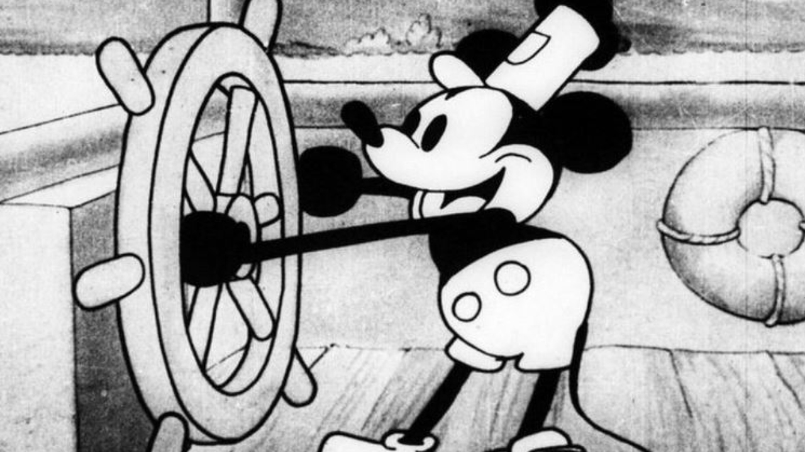

"Se você pode sonhar, você pode fazer."-Walt Disney
Estudando a Disney!
Introdução
Você já parou para pensar na em como as animações foram criadas? De acordo com os historiadores, pinturas rupestres nas paredes das cavernas quando iluminadas pelo fogo, traziam perspectiva de movimento (ondulações projetadas pelo movimento das chamas do fogo.)
A primeira animação registrada foi "Fantasmagorie" pelo francês Émile Cohl em 1908. "Fantasmagorie" com poucos minutos de duração e características simples, foi um marco para o mundo da animação. O grande "boom" das animações veio com o Gato Félix produzido por Pat Sullivan e animado por Otto Messmer. Após este grande feito, Walt Dinsey entrou paraa reistrar sua marca, o Mickey Mouse.
História da Disney

Uma das empresas mais conhecidas no mundo, Disney, foi criada em 1923 após uma ideia inspirada no Gato Félix ter dado errado. Walt Disney e seu irmão Roy Oliver Disney fundaram a Disney Brothers Cartoon Studios, uma das indústrias de animação pioneiras no mundo. A primeira animação com aúdio, "Alice's Wonderland", foi uma curta-metragem e a primeira animação de longa-metragem foi Branca de Neve e os Sete Anões (1934-1937).
Com as primeiras animações, "novas" foram surgindo. Talvez você nunca tenha percebido, mas os filmes mais antigos reutilizavam muitas cenas, pois existiam muitos custos e trabalho. Olhe essas duas imagens!Consegue ver alguma semelhança?
Mais exemplos abaixo:

Clicando no link a seguir, você verá as evoluções nas animações detalhadamente.
Clique aqui